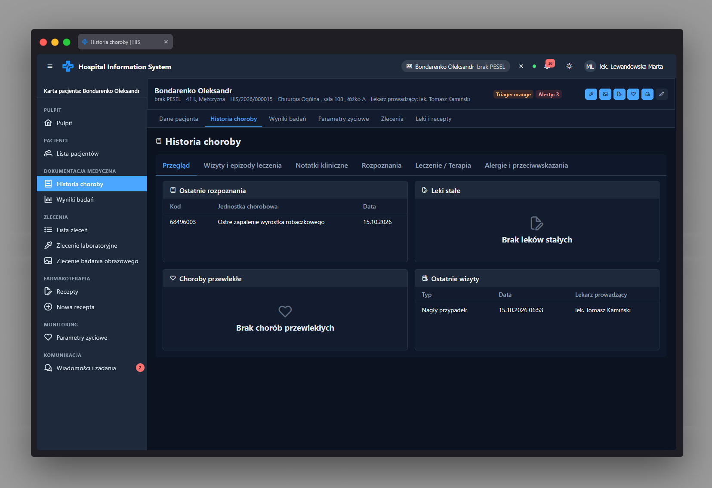

Historia choroby app-patient-history-page
Ścieżka
Podstrona karty pacjenta, dostępna pod adresem
/patients/:patientId/history. Jest dzieckiem powłoki
karty pacjenta /patients/:patientId (komponent
PatientChartPage), która wcześniej wczytuje dane
pacjenta przez patientResolver. Dostęp chroniony jest
przez permissionGuard wymagający uprawnienia
ehr:read albo ehr:read-limited - zakres
widocznych zakładek zależy od tego, które z tych uprawnień posiada
rola.
Przeznaczenie
Prezentuje pełną historię choroby pacjenta w formie zakładek
(p-tabs): Przegląd, Wizyty i epizody leczenia,
Notatki kliniczne, Rozpoznania, Leczenie / Terapia oraz Alergie i
przeciwwskazania. Aktywna zakładka jest zsynchronizowana z
parametrem zapytania tab w adresie URL.
Przy uprawnieniu ehr:read (pełny dostęp) widoczne są
wszystkie zakładki. Przy samym
ehr:read-limited zakładki Przegląd, Wizyty i epizody
leczenia oraz Notatki kliniczne są ukryte, a jeśli w adresie
żądano jednej z nich, strona przełącza się automatycznie na
zakładkę Rozpoznania.
Dane poszczególnych sekcji (podsumowanie, wizyty, epizody,
notatki, rozpoznania, leczenie, alergie, przeciwwskazania) są
pobierane równolegle (forkJoin). Błąd pojedynczej
sekcji (np. brak uprawnienia) nie blokuje pozostałych - zamiast
tego wyświetlany jest komunikat ostrzegawczy "Nie wszystkie sekcje
udało się wczytać.".
Dane wejściowe
-
Identyfikator pacjenta (
patientId) z segmentu trasy. -
Zmiana zakładki (kliknięcie w
p-tab) - uaktualnia parametrtabw URL. - Filtr kategorii notatki klinicznej (lista rozwijana w zakładce Notatki kliniczne).
- Formularz w oknie dialogowym dodawania notatki klinicznej (otwierane przyciskiem "Dodaj notatkę").
-
Formularz w oknie dialogowym dodawania rozpoznania (przycisk
"Dodaj rozpoznanie", widoczny tylko z uprawnieniem
ehr:diagnosis:write- lekarz). -
Formularz w oknie dialogowym dodawania alergii (przycisk "Dodaj
alergię", widoczny tylko z uprawnieniem
ehr:allergy:write- lekarz, pielęgniarka).
Akcje
-
Zakładka Przegląd: karty podsumowania EHR
(
app-ehr-summary-cards) na podstawie danych podsumowania i wizyt. -
Zakładka Wizyty i epizody leczenia: grupuje wizyty (encounters)
według epizodu leczenia i prezentuje je jako osie czasu
(
p-timeline) z typem, statusem, datą, oddziałem, lekarzem oraz opisem lub powodem wizyty; wizyty bez epizodu trafiają do grupy "Wizyty bez przypisanego epizodu". -
Zakładka Notatki kliniczne: filtrowanie notatek po kategorii,
lista kart notatek (tytuł, treść, objawy, autor, data),
dodawanie nowej notatki klinicznej
(
EhrService.addNote()) z odświeżeniem danych po zapisie. -
Zakładka Rozpoznania: tabela rozpoznań (kod ICD-10, jednostka
chorobowa, typ, status, data, lekarz) oraz dodawanie nowego
rozpoznania (
EhrService.addDiagnosis()). - Zakładka Leczenie / Terapia: tabela terapii (nazwa, typ, status, data rozpoczęcia, lekarz prowadzący).
-
Zakładka Alergie i przeciwwskazania: panel alergii i
przeciwwskazań (
app-history-allergies-panel) z wyróżnieniem alergii zagrażających życiu (aktywnych, o ciężkościlife_threatening) oraz dodawanie nowej alergii (EhrService.addAllergy()). - Po każdym zapisie (notatka, rozpoznanie, alergia) wyświetlany jest toast o sukcesie lub błędzie, a dane karty są ponownie wczytywane.
Zrzut ekranu
